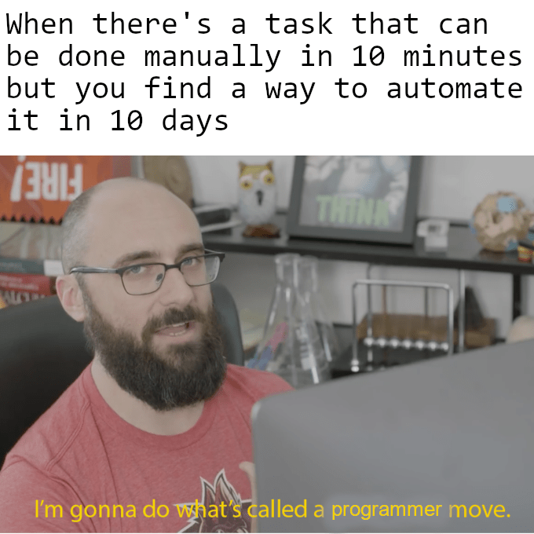

Why did I make this?
I was coding a game, I used VSCode. Everytime I compiled a class, the class file went to the same directory as the source file, I had to cut the file and paste in bin everytime I compiled the file to try it, I realized I could save my time by making a program for it!

How long did it take?
About 30-40 minutes.
Updates?
Maybe, I will add a feature that allows the user to enter a .crs(ContiRemove Settings) file as an argument, 50/50 percent chance I will actually add that feature. I definitely will, though, if I don't have anything else to do.(I ADDED THE FEATURE)
Implementations in other programming languages
I find it easier to code in Java, Maybe I will code it in C++ too, if I want to.